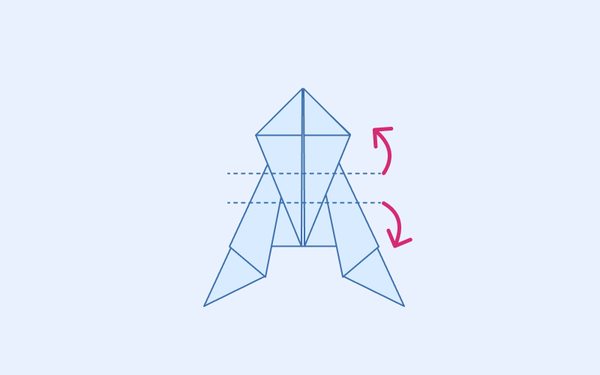

FrontEnd & Creative Coding
Hello, I'm Stanko, a software engineer in Amsterdam, making digital products and generative art.
Blog
Origami jumping frog
A variation of an origami jumping frog that I learned to make as a child.

Preserving text size when scaling SVGs
If you ever needed to keep your SVG text size consistent regardless of scale, this approach should do the trick. It's simple, flexible, and doesn't require much code.
Apply blur to iOS status bar in PWA
When using the "black-translucent" status bar style on iOS, content can blend into the status bar while scrolling beneath it. This simple CSS solution adds an overlay and applies a blur effect to prevent that.
CSS-only glitch effect
Slice It, Move It, Hue-rotate It!
Make regular expressions easier to read
Make complex regular expressions easier to read by breaking them into multiple lines.